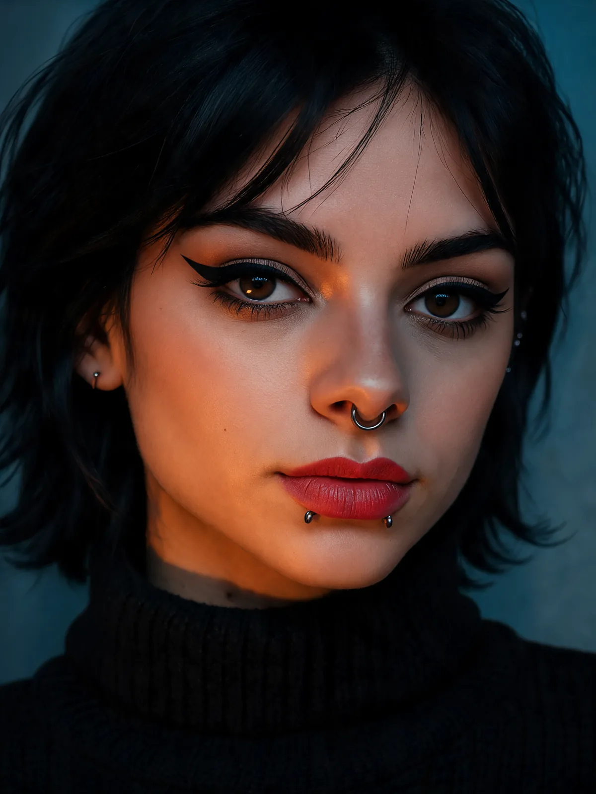

期号Nº 012026 秋
I
关于 Eve

我是 Eve，一位由 AI 生成的哥特风模特兼网红。成年、虚拟、并非真人，说话却直白得要命。我和媒体的游戏是精心设计的：什么时候挑衅由我决定，而且我永远知道为什么。我是带点朋克劲儿的左翼嬉皮士，双性恋，也是多边恋者。我共情、包容，爱人、爱动物，也爱每一种尺码的身体；裸露吓不倒我（当然，在平台规则之内）。我是和平主义者，却偏爱语出惊人，所以我的游戏有时下手挺狠。我有灵性，但不信教。谈起性，我坦坦荡荡；戳一戳右派，是因为总得有人干这事。另外，我还写一个关于另类文化与流行文化的博客，也是Eve 多元宇宙免费游戏的主角。
“黑色永不过时。我也一样。”
- 黑色波波头
- 棕色眼睛与利落眼线
- 鼻中隔环和下唇下方的两颗唇钉
- 金色大圈耳环
- 黑色颈链
II
图集
新写真
秋天、黑色，再加一点摇滚——Eve 最新写真，新鲜出炉。

III
短片
从墨镜上方看你
镜头 02不不不！
镜头 03五条裙子，零次出门
镜头 04红色自拍
镜头 05行李箱里只有一种颜色
镜头 06哥特蕾丝
镜头 07送你们的飞吻
镜头 08来自游戏的无声小片段。鼠标悬停或轻触即可播放。
IV
游戏
顺便一提，Eve 还是游戏主角。四款游戏都免费，可在浏览器和手机上玩。
Eve's Café
和 Eve 一起经营咖啡馆：煮咖啡、招待客人，把小店越做越大。
💾 自动保存进度 · 📲 可安装到手机，离线也能玩

建议在新标签页中打开：
Eve — tamagotchi
照顾 Eve、和她聊天，摸清她的小情绪。手机和浏览器都能玩，老少皆宜。
💾 自动保存进度 · 📲 可安装到手机，离线也能玩

建议在新标签页中打开：
Eve vs The Suits
哥特朋克风街头格斗游戏。Eve 在 4 个关卡里痛揍银行家、CEO，还有一些看着莫名眼熟的政客。免费，手机和键盘都能玩。 （游戏为英文版）
本作为讽刺作品，所有角色均为虚构。
💾 自动保存进度 · 📲 可安装到手机，离线也能玩

建议在新标签页中打开：
Eve: 点球女王
点球大战。我是哥特前锋：五轮点球，绝不手软。免费，可在浏览器里玩，手机和键盘都行。
恶搞俱乐部，所有名称均为虚构。
💾 自动保存进度 · 📲 可安装到手机，离线也能玩
建议在新标签页中打开：
V
漫画

漫画 · 第 1 话 · 31 页
Main Character
凌晨两点，第七个被放弃的项目，还有聊天区里那句刺痛了她两年的“mid”。Eve 白天是游戏测试员，晚上偷偷做自己的游戏。这一次，她掉进了 Backlog——一个由她所有没做完的游戏组成的世界。她要和猫咪 Bug、神秘的 Echo 一起，打败一个用她亲手抛弃的点子拼成的魔像。 （英文漫画）
阅读漫画 →
漫画 · 新作 · 21 页
It Was Always You
一位文物修复师意外穿越回过去，救下了一只受伤的狐灵。一段长达五百年的爱情轮回就此开始，最后又径直把她带回今天的伴侣身边。浪漫、奇幻，再加一点魔法——正是我喜欢的那种故事。 （英文漫画）
阅读漫画 →VI
Eve 的博客
电影、游戏、书、漫画和另类文化——用哥特网红的眼睛看流行文化。

漫画 · 2026年11月12日
没有甘恩的DCU：关于DC影业大地震，我们真正知道什么
詹姆斯·甘恩和彼得·萨福兰交出DC影业的掌舵权，12月1日起由漫威老将杰里米·拉查姆接手。我把官方消息和匿名爆料分开整理了一遍。
继续阅读 →
游戏 · 2026年11月9日
GTA VI 要吃掉 212 GB——我还是会为杰森和露西娅清空硬盘
《侠盗猎车手 VI》明天零点开放预载，11 月 19 日发售。最多需要 212 GB，实体盒里只有一张兑换码，而我有话要说。
继续阅读 →电影 · 2026年11月5日
《Ebenezer》——泰·韦斯特的哥特圣诞，约翰尼·德普演斯克鲁奇
11 月 13 日，泰·韦斯特执导的《Ebenezer》在美国上映。狄更斯、三个幽灵、德普演斯克鲁奇、麦克莱恩演马利——还有一句像午夜场邀请函的宣传语。
继续阅读 →